队列解开写和推
入库和推送分开。连接层压力上去时，增加长连接机器，业务进程继续处理接口。
群消息按「群编号 + 序号」保存一次。会话列表只改摘要：最后一条序号、未读、置顶、免打扰。不会按群人数，给每个人各复制一行消息、各写一行会话。
发送前先看哪些长连接机器上有这个群的人。那台机器上没人，就不往那里投。当时不在线的成员，下次打开用序号把中间缺的消息补上。
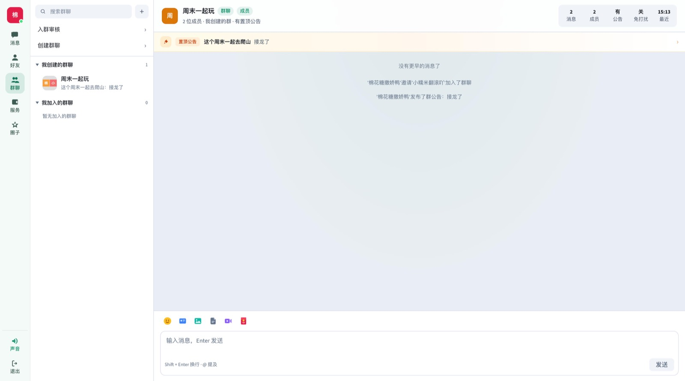
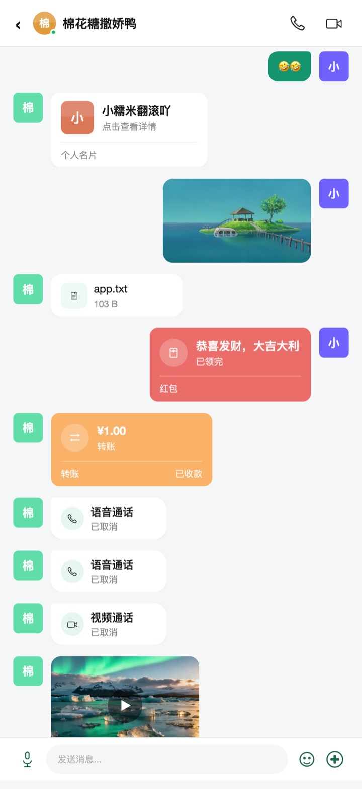
支持表情、语音、视频、名片、引用、转发、已读和 @。转账、红包由钱包服务写入会话，客户端不能自己拼一条资金气泡。通话结束后，会话里留下语音或视频记录。
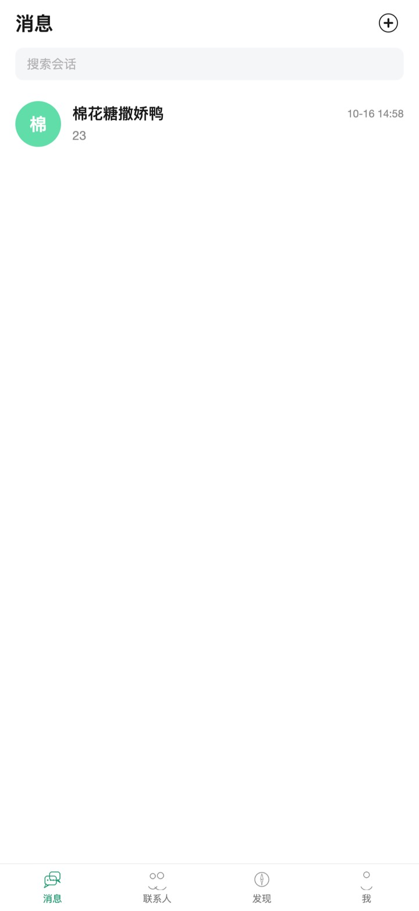
用户挂在某一台 WebSocket 上。业务服务写完数据库，把投递交给消息队列，发消息接口不用等所有人收完。私聊只投到对方所在的那一台。同时在线规模取决于你的机器和带宽，这套结构让写库不随群人数放大。
入库和推送分开。连接层压力上去时，增加长连接机器，业务进程继续处理接口。
重连时按序号增量拉取，并限制客户端自己的并发。读、写、资金和验证码按用户限速。
会话和消息在手机本地库。网络恢复后，再用序号把缺口补上。
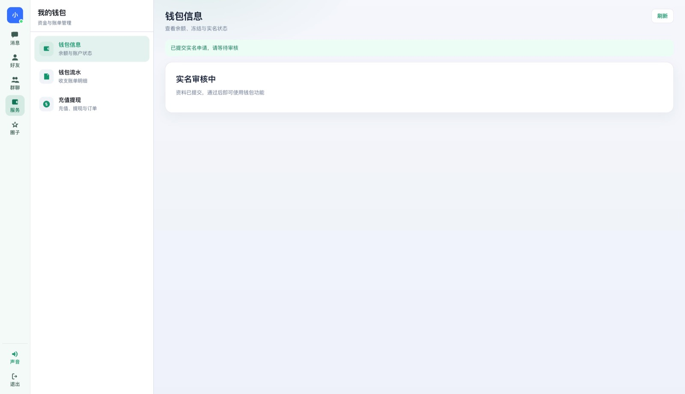
钱包支持实名开通、转账、拼手气、等额和专属红包，充值和提现由后台人工确认。朋友圈可以发图文或视频，并设置好友可见、仅自己、部分可见或不给谁看。
业务接口的 JSON 用一次性 AES 加密，密钥再用 RSA 公钥包住，私钥只在服务器。登录密码和钱包安全密码哈希保存。
可以查用户、封禁、看群和消息、审核钱包、管理朋友圈、配置角色菜单。登录和后台操作留有日志。资金类订单由运营确认，没有第三方支付自动到账。
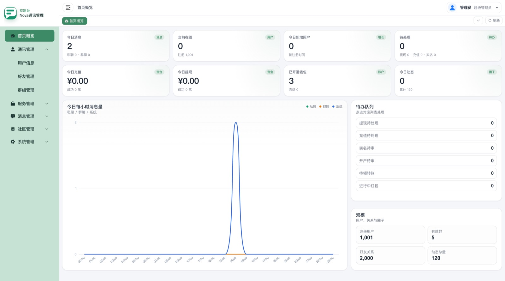
下面两段是产品实拍。网页版大约 2 分钟，App 大约 4 分钟。
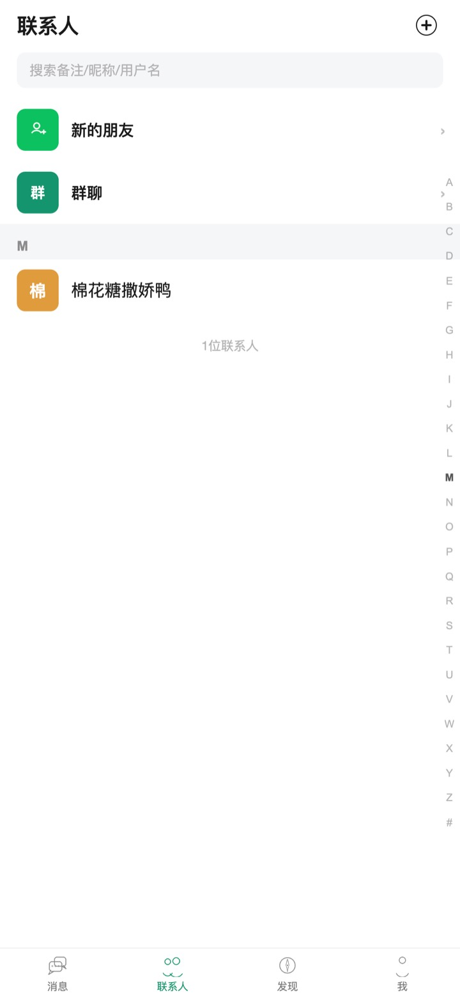
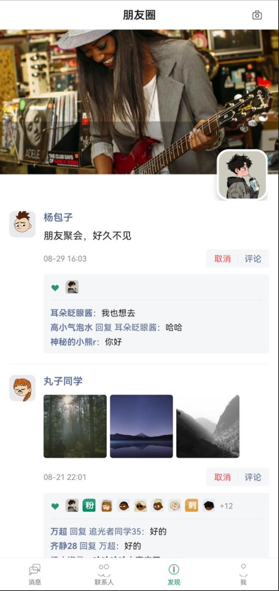
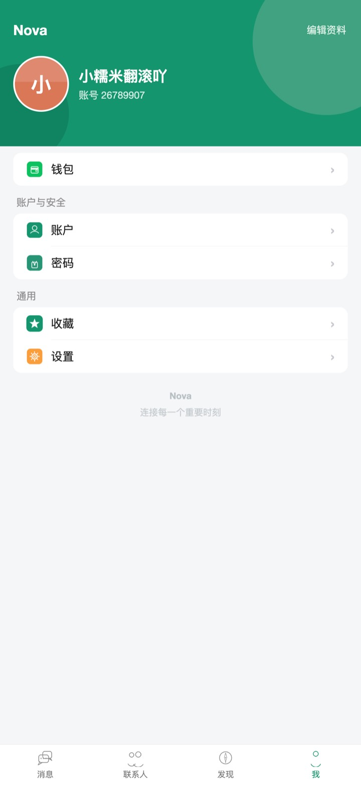
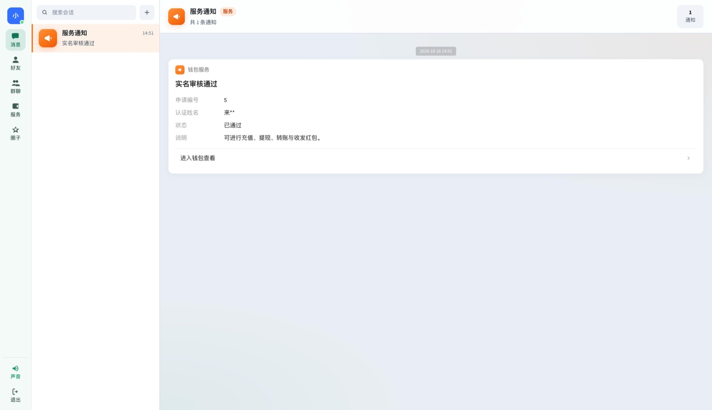

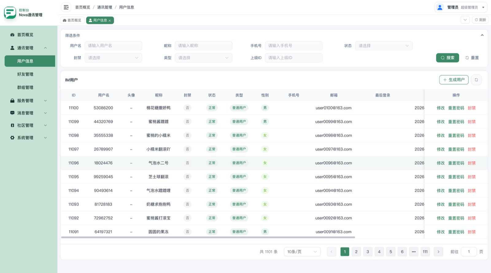
登录按账号和设备分别计失败次数。连续失败会锁定一段时间。失败达到次数后，即使密码正确，也要再验证手机或邮箱。新设备不在信任列表里时，同样要验证码。
验证通过后的设备会记为信任设备，有有效期和数量上限，超出后淘汰最久没用的。登录和注册都要带设备号。密码和钱包安全密码只存哈希。管理端可以再开动态口令。这些次数、锁定时长和信任设备数量都可以配置。
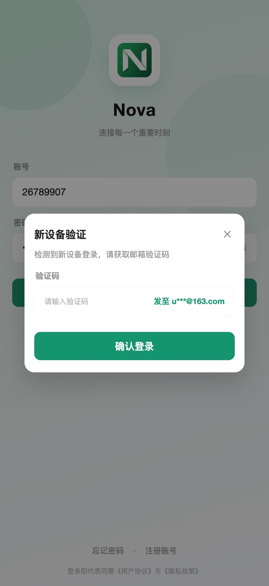
购买源码之后，品牌、页面、业务规则和部署都可以接着改。消息序号、大群存储和长连接这套结构保留，在上面加你的功能。
更换名称、Logo 和主题色。网页、H5、Android、iOS 的页面按使用场景调整。
在私聊、群、朋友圈、钱包和后台菜单上增加字段、审核流程或运营能力。
对接短信、邮件或已有账号体系。也可以按服务器环境协助完成 Docker、证书和上线。
留言时写上使用场景、是否需要定制开发或协助部署、预计上线时间。源码部署在你的服务器上。服务器、域名、短信和对象存储另备。音视频目前是一对一，群通话可以单独评估。